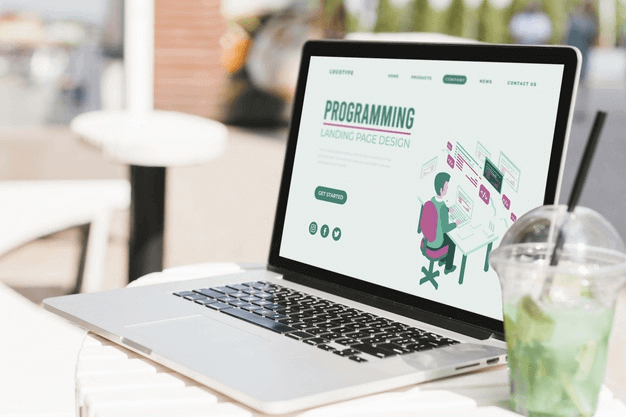
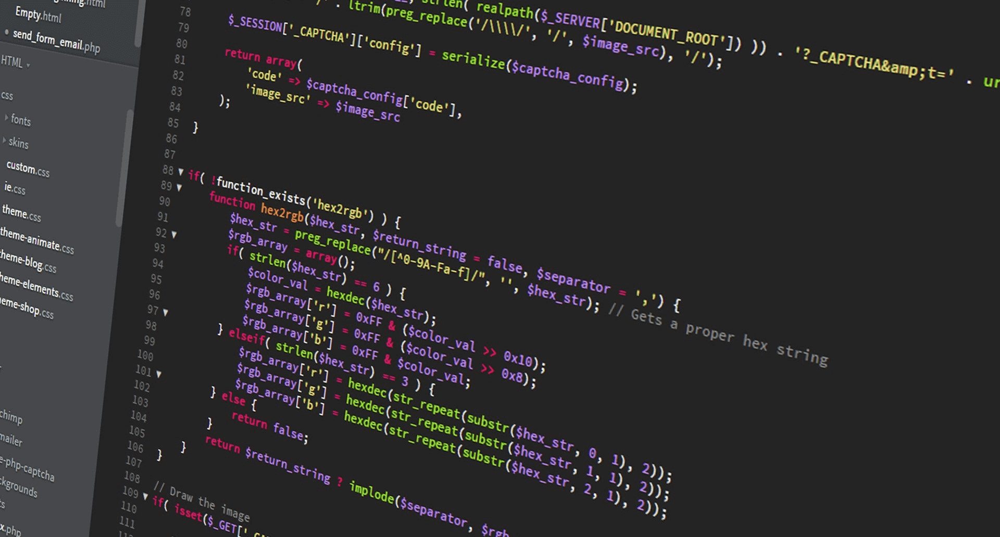

Mengenal Apa Sih Programming Itu?

Kamu masih bertanya-tanya kan, apa itu programming? Simpel saja,
programming adalah sebuah proses untuk membuat program di komputer.
Program yang dibuat bisa berupa software, website, aplikasi android, dsb.
Lalu, mulai dari manakah agar kamu bisa memulai programming?
Untuk membuat program tentunya ada beberapa tahapan. Mulai dari tulis menulis,
menguji, merevisi, dan mengevaluasi, serta mengujinya lagi sampai program
tersebut benar-benar jadi dan sesuai dengan apa yang diinginkan.
Jadi, programming adalah suatu proses atau kegiatan menulis dan menguji
(pemrograman) agar program dapat dibuat, dan hasilnya sesuai apa yang
diinginkan.
Bagaimana, sudah mulai paham kan apa itu programming?
Lalu, muncul pertanyaan lagi mengenai programming. Apa sih yang ditulis
dalam proses tersebut? Tentunya, bukan tulisan biasa. Tidak seperti
saat menulis buku novel ataupun puisi karena ini berhubungan dengan
program komputer. Sehingga bahasa tulisan pun harus dapat dimengerti
oleh komputer, yakni berupa kode-kode program yang sudah ada sebelumnya.
Itulah mengapa seorang yang ahli programming mesti menguasai bahasa pemrograman.
Saat ini banyak bermunculan bahasa pemrograman yang baru. Hal ini terjadi
karena seseorang berupaya menyederhanakan dan memudahkan bahasa pemrograman
yang sudah ada. Tujuannya untuk pembuatan program jauh lebih cepat, efektif,
dan sesederhana mungkin.
Bahasa Pemrograman untuk Programming

Kamu akan mengenal bahasa pemrograman yang biasa digunakan untuk programming.
Perkembangan teknologi yang begitu cepat tentu membawa dampak bagi bahasa
pemrograman. Salah satunya adalah mulai bermunculan bahasa pemrograman yang
baru. Berikut beberapa macam bahasa pemrograman yang cukup popular akhir-akhir
ini.
Java
Java adalah bahasa pemrograman tingkat tinggi yang berorientasi objek (OOP)
dan tersusun dari beberapa kelas. Singkat cerita, kamu masih ingat logo Java
kan? Dilambangkan dengan secangkir kopi panas. Iya itu benar, Java didirikan
oleh James Gosling. Ia seorang penikmat kopi.
Terlepas dari itu, Java menjadi bahasa pemrograman andalan oleh para
programmer atau pembuat aplikasi. Mengapa? Sebab, Java dapat berjalan hampir
di semua sistem operasi. Contohnya adalah aplikasi Android yang dibuat
menggunakan bahasa Java.
Python
Bahasa pemrograman yang satu ini sedang banyak digandrungi oleh para pembuat
aplikasi. Bagi kamu yang sudah tahu programming, maka akan tahu juga alasannya.
Yap, Python merupakan bahasa tingkat tinggi. Saat ini juga banyak perusahaan
besar yang sudah mengimplementasikannya untuk mendukung perkembangan IT.
Jadi, kamu-kamu yang ingin memulai programming, tidak ada salahnya untuk belajar
bahasa yang satu ini ya. Selain itu, bahasa pemrograman yang satu ini mulai
populer karena banyak digunakan untuk kecerdasan buatan atau AI
(Artificial Intelligence).
C++
Kamu sudah tahu bahasa yang satu ini? Jika sebelumnya mengenal programming,
maka kamu akan tahu juga betapa melejitnya bahasa pemrograman ini. C++
adalah bahasa pemrograman yang memiliki sifat berorientasi objek, sama
halnya dengan Java. Bahasa pemrograman yang satu ini menjadi bahasa tercepat
ketika dijalankan oleh mesin.
C++ merupakan bentuk perkembangan dari bahasa C. Bahasa ini sangat banyak
digunakan oleh pembuat aplikasi. Bahkan Google menggunakan bahasa C++ juga
dalam mengembangkan produknya. Sebab, C++ adalah bahasa pemrograman yang
ideal dan dapat digunakan untuk menangani beberapa server dalam satu waktu.
JavaScript
JavaScript merupakan bahasa pemrograman scripting yang digunakan untuk
membuat situs web agar lebih interaktif. Bahasa yang satu ini paling
banyak digunakan oleh para developer web. Bahkan, sekelas Google pun
memakai Javascript. Mengingat Google mempunyai beberapa produk web,
seperti Google Ads yang didukung oleh JavaScript.
PHP
Untuk kamu yang sudah memulai belajar programming sudah tidak asing
jika mendengar kata PHP. PHP di sini maksudnya bahasa pemrograman
loh hehe. PHP digunakan untuk membangun sebuah website. Biasanya PHP
dikolaborasikan dengan HTML, mengapa? Sebab, PHP digunakan untuk logisnya,
sedangkan HTML digunakan sebagai tampilan kerangka web tersebut.
Bahasa Pemrograman PHP cocok bagi pemula. Di Indonesia banyak sekali
forum untuk belajar bahasa pemrograman PHP. Jika ingin mulai belajar
PHP, yuk klik dan simak artikel berikut ini Apa Itu PHP? Beserta Contoh
untuk Pemula.